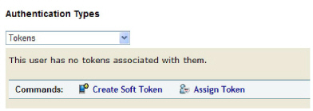
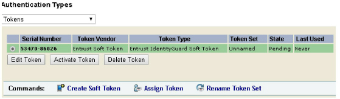
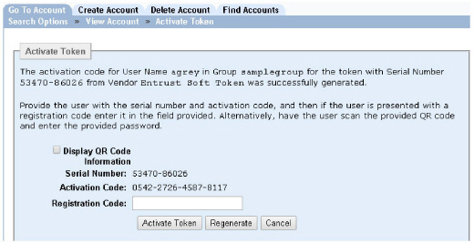
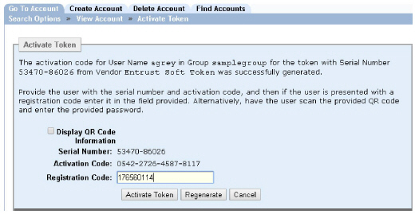

|
IdentityGuard Server 13.0 Administration Guide |
|
IdentityGuard Server 13.0 Administration Guide |
If you do not use Entrust IdentityGuard Self-Service Module, or if users have problems with activating a soft token through self-service, use the following procedure to display the serial number and activation code that you need to give a user by phone to activate the soft token. The user must manually enter the received information into the Mobile Soft Token app.
To create and activate a soft token using manual information entry
1. Log in to the Administration interface (Log in and out of the Administration interface) with an account that has the userTokenCreate permission.
2. Find the account of the user for whom you want to activate the soft token.
3. On the Account Information page, under Authentication Types, select Tokens.

4. Click Create Soft Token.
Note: If the Create Soft Token button does not appear, it may be because: a) you do not have the userTokenCreate permission, b) the user already has a soft token in the pending or hold-pending state, c) you have not configured a soft token vendor, or d) you do not have soft token licenses.
5. On the page that appears, do the following:
a. Optionally, fill out the Token Set field with a name for the set to which the token will belong.
Examples:
‘Bob’s BlackBerry Token’
‘Bob’s Home PC Token’
‘Alice Joint Account Token’
‘John Joint Account Token’
The token set name can be up to 255 characters. Token sets are mandatory if you want to allow the user account to have multiple usable tokens. See Token set overview (using multiple tokens).
If the user does not require multiple usable tokens, a token set is optional. Without specifying a name, the token belongs to the set called unnamed.
Note: If there is no Token Set field, it is because the maximum number of token sets has been reached for the user. To increase this maximum, see Token set overview (using multiple tokens), "Enabling multiple tokens per user through the token policy".
b. Optionally, select a token set from the Token Set drop-down list, if a list appears. By selecting an existing token set, the token becomes related to all other tokens within the same set under the user’s account and progresses through the state transitions with them. For details, see Token set overview (using multiple tokens), "How token sets work".
Note: If a token
set is missing from the Token Set drop-down
list, it is because this set is currently associated with a token in the
pending state. After the token progresses to the current state, the set
reappears in the list.
If the Token Set drop-down list
itself is missing, it is because there are either no existing sets defined
for the user, or all existing sets are currently associated with tokens
in the pending state.
c. If necessary, select a different state from the Initial Token State list. See Grid card and token state overview for details. (The information applies equally to soft tokens.)
d. Optionally, in the Comments field, enter a comment.
e. Click Create Soft Token.
The user’s account page is updated with the soft token.

You have now created a soft token in Entrust IdentityGuard and assigned it to a user. The next step is to activate it.
6. With the newly created token select in the list, click Activate Token.
Note: If the Activate Token button is not visible, it may be because you do not have the userTokenActivate permission.
The Activate Token screen appears.

7. Direct the user to enter the Serial Number and Activation Code shown on the screen in their soft token application:
8. Direct the user to enter either the Identity Provider address (preferred) or the Identity Provider name (only if the Identity Provider address is not available).
● Identity Provider address (preferred)
If you are using the Self-Service Module, this is listed in the Self-Service Module’s Configuration interface, under Properties > Soft Token Transaction Component Settings > Identity Provider Address. By default the config.json file is available as part of self-service at the URL <hostname>:8445/igst. (The port 8445 may be different if the defaults were not used when Self-Service Module was installed.)
If you are not using the Self-Service Module, this is the HTTPS URL where the config.json file is hosted. For example, if the config.json file is at https://www.example.com/config.json, then the URL you must give the user is www.example.com.
OR
● Identity Provider name (only if the Identity Provider address is not available)
If you are using the Self-Service Module, this is listed in the Self-Service Module’s Configuration interface, under Properties.
If you are not using the Self-Service Module, this can be any name you choose.
If you supply the Identity Provider name rather than the Identity Provider address:
– there is no custom branding or color selection for the Mobile Soft Token app or Entrust IdentityGuard Desktop Soft Token.
– the mobile device cannot send the registration code automatically to Entrust IdentityGuard for immediate activation. Instead, the code is displayed on-screen.
9. After the user enters the above information, have them select Save in their soft token application.
The New PIN screen appears if your policies enable PIN protection. Have the user specify a PIN and confirm it. This PIN is necessary to unlock the soft token application on subsequent use.
If the New PIN screen does not appear, it is because the soft token is not PIN-enabled.
The soft token application generates a registration code.
The registration code is displayed only if registration cannot be completed automatically (for example, if the mobile device has no internet connection).
10. If a registration code appears, have the user tell it to you, then enter it into the Registration Code field, and then click Activate Token.
If no registration code was displayed to the user, just click Activate Token without entering a registration code.

You have now activated a soft token. The user can now use this token to authenticate.